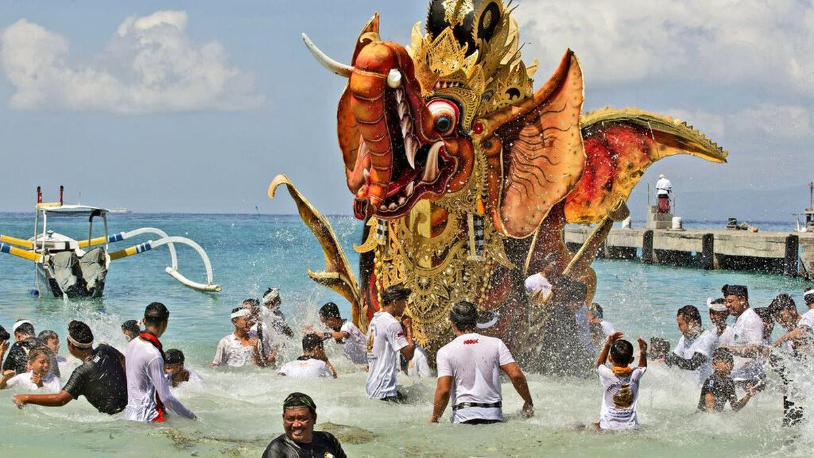
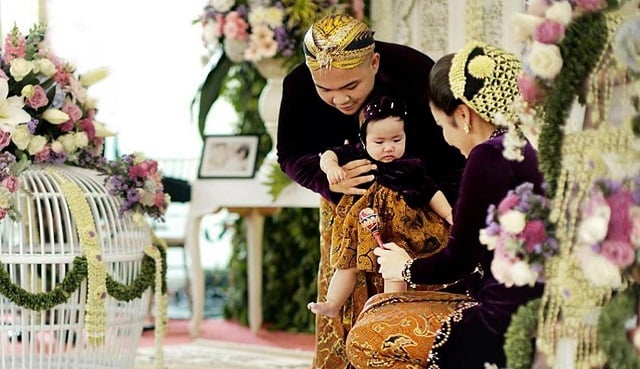
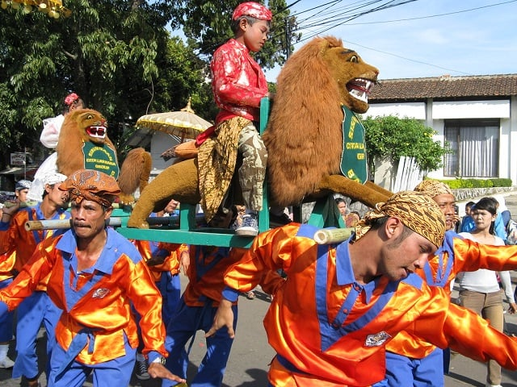
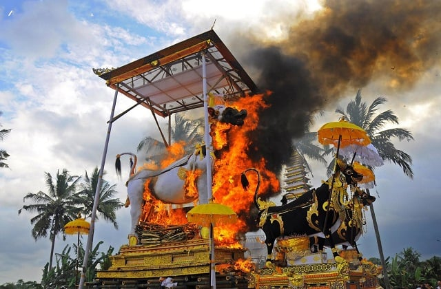

Tarian Tradisional
Indonesia memiliki berbagai tarian tradisional seperti Tari Kecak dari Bali, Tari Saman dari Aceh, dan lainnya
Seni tari tradisional tidak pernah berhenti untuk menjadi daya tarik wisata budaya yang mengesankan. Setiap daerah di Indonesia, memiliki tarian khasnya masing-masing. Tentu saja tarian tradisional ini selalu memiliki makna mendalam di baliknya, tak sekadar gerakan indah dengan iringan instrumen musik tradisional. Sobat Pesona yang mulai suntuk di rumah, tidak ada salahnya menikmati tarian tradisional ini melalui berbagai platform langsung dari gadget Sobat Pesona.
Dari sekian banyak budaya di Indonesia, sekian keunikan yang dimiliki negara kita, beberapa tarian tradisional ini bisa jadi opsi yang menarik. Tentu saja ini bukan berarti tarian yang kami sajikan dalam artikel singkat ini lebih baik dari tarian lain, mengingat semua tarian tradisional memiliki kualitas uniknya masing-masing dan value yang berbeda. Hanya saja, sebagai referensi untuk Sobat Pesona, berikut beberapa tarian yang merupakan warisan budaya asli masyarakat di daerah Indonesia.
1. Tari Saman, Tarian Tradisional Masyarakat Aceh

Menjadi salah satu tarian tradisional paling dikenal di Indonesia, Tari Saman merupakan tarian yang aslinya berasal dari dataran tinggi Gayo, dan mulai terdokumentasi pada abad ke-14. Dengan gerakan kompak setiap penarinya, Tari Saman dari Aceh menjadi sangat unik dan seru untuk disaksikan. Kekompakan ini bahkan semakin terasa megah ketika ditarikan oleh penari yang jumlahnya ribuan.
Tari Saman sendiri sebenarnya merupakan media berdakwah yang memanfaatkan seni tari. Sebelum tarian ini dimulai, biasanya akan ada seorang yang berperan mukadimah atau pembukaan, yang menyampaikan nasihat dan pesan mendalam pada penonton dan pemain tari ini. Nilai yang terkandung dalam gerakan dan syair yang dinyanyikan oleh penarinya adalah mengenai pendidikan, keagamaan, sopan santun dengan sesama manusia, jiwa kepahlawanan, kekompakan, dan kebersamaan. Selain itu Tari Saman juga sarat akan nilai-nilai keislaman, sehingga memiliki nuansa dakwah yang sangat kental ketika ditampilkan.
2. Tari Tor-Tor, Kebanggaan Masyarakat Sumatera Utara

Sedikit bergeser ke arah selatan, terdapat Tari Tor-Tor yang menjadi kebanggaan masyarakat Sumatera Utara. Daerah yang terkenal dengan Kain ulosnya tersebut juga memiliki tarian tradisional yang bermakna mendalam dan memiliki gerakan yang unik. Iringan musik Magondangi diartikulasikan ke gerakan hentakan kaki para penarinya, sehingga menimbulkan bunyi ‘tor-tor’ yang jadi nama tariannya.
Tarian tradisional ini pada umumnya ditarikan untuk kegiatan seremonial adat atau acara besar. Secara umum, makna dari Tari Tor-Tor sendiri adalah untuk membangkitkan jiwa yang ada di dalam diri manusia. Jadi tujuannya begitu mendalam hingga yang ingin disentuh adalah jiwa manusia, tak hanya penarinya saja, namun juga untuk semua yang hadir menyaksikan dan pemilik hajatan. Wah, pasti terasa sangat sakral ya Sobat Pesona?
Jenis Tari Tor-Tor sendiri sebenarnya sangat banyak, namun satu hal yang pasti, penarinya akan menari menggunakan ulos, dan diiringi dengan alat musik tradisional yang disebut gondang. Perbedaan terletak pada irama dan jumlah gondang yang digunakan untuk setiap daerah di Sumatera Utara. Jadi Sobat Pesona juga bisa melihat Tari Tor-Tor dari berbagai daerah untuk melihat keunikannya masing-masing.
3. Tari Kecak, Irama Musik Alami dari Mulut Sendiri

Bagi Sobat Pesona yang pernah ke Bali, tentu mengetahui benar ketenaran Tari Kecak yang ada di sana. Disajikan oleh belasan sampai puluhan laki-laki yang duduk melingkar, tarian tradisional ini menjadi salah satu tarian paling ikonik yang ada di Bali. Tarian ini, secara umum, menyajikan eksotisme dan energi besar dari setiap penarinya untuk membangkitkan semangat.
Makna dari tarian ini sendiri sebenarnya adalah mengisahkan mengenai cerita barisan kera yang datang membantu Rama, dalam kisah Ramayana. Selain itu, sebenarnya tarian ini juga merupakan media berkomunikasi dengan Tuhan dan roh para leluhur, untuk mendengar apa yang ingin disampaikan kepada masyarakat luas.
Tarian ini menggunakan suara penarinya sebagai irama utama. Dengan menyerukan ‘cak’ berkali-kali dengan irama yang teratur, harmonisasinya terasa sangat kompak dan indah. Ditambah dengan satu alat musik pukul sederhana yang digunakan untuk mengatur tempo, semua terasa sangat indah ketika disajikan dengan penuh semangat. Sobat Pesona bisa merasakan semangat yang ada pada penarinya hanya dengan menyaksikan tarian ini lho!
Upacara Adat
KEBUDAYAAN memiliki peran dan fungsi yang sentral dan mendasar sebagai landasan utama dalam tatanan kehidupan berbangsa dan bernegara karena suatu bangsa akan menjadi besar jika nilai-nilai kebudayaan telah mengakar (deep-rooted) dalam sendi kehidupan masyarakat.
Indonesia tersebar sebagai negara kepulauan negara-bangsa yang memiliki kekayaan dan keragaman budaya nusantara dari Sabang sampai Merauke yang memiliki daya tarik tersendiri di mata dunia.
Setiap daerah memiliki mempunyai macam-macam upacara adat dengan karakteristik dan kepercayaannya masing-masing. Secara umum upacara adat adalah salah satu tradisi masyarakat tradisional yang masih dianggap memiliki nilai-nilai yang masih cukup relevan bagi kebutuhan masyarakat pendukungnya.
1. Upacara Adat Tedak Siten di Jawa
Tedak Sinten adalah upacara adat di Indonesia yang berasal dari kebudayaan Jawa.
Upacara ini memiliki arti menapakkan kaki ke bumi dan dilakukan oleh bayi berusia 7 bulan yang sedang belajar berjalan dan duduk.
Makna dari Tedak Sinten adalah agar sang anak bisa menjadi mandiri di masa dewasa kelak.
2. Upacara Adat Sisingaan di Jawa Barat
Upacara adat di Indonesia berikutnya adalah Sisingaan yang berasal dari Jawa Barat.
Tradisi ini sudah ada sejak zaman Belanda dan merupakan bentuk perlawanan pada para penjajah.
Kini, Sisingaan digunakan untuk memeriahkan acara sunatan atau khitanan anak lelaki.
3. Upacara Adat Ngaben di Bali
Salah satu upacara adat paling terkenal di Indonesia adalah Ngaben yang berasal dari Bali.
Ngaben merupakan tradisi orang Bali untuk menghormati orang-orang yang meninggal.
Orang-orang yang melakukan upacara adat ini akan membakar jenazah kemudian menghanyutkan abunya ke laut atau sungai.